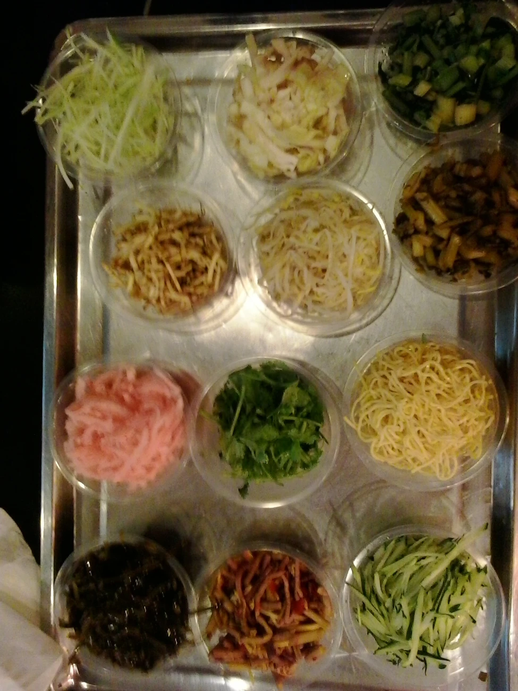
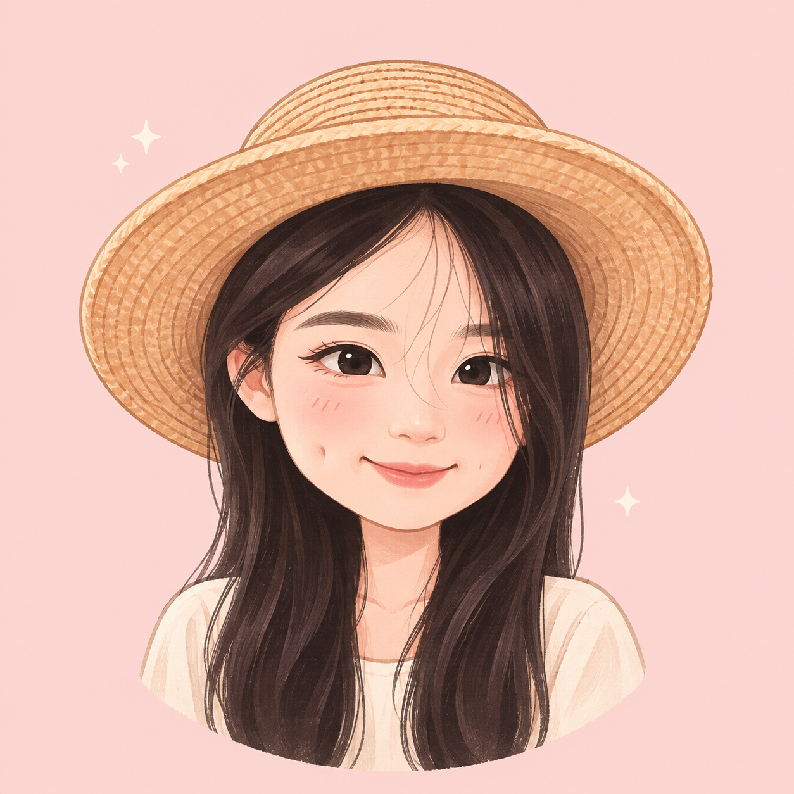
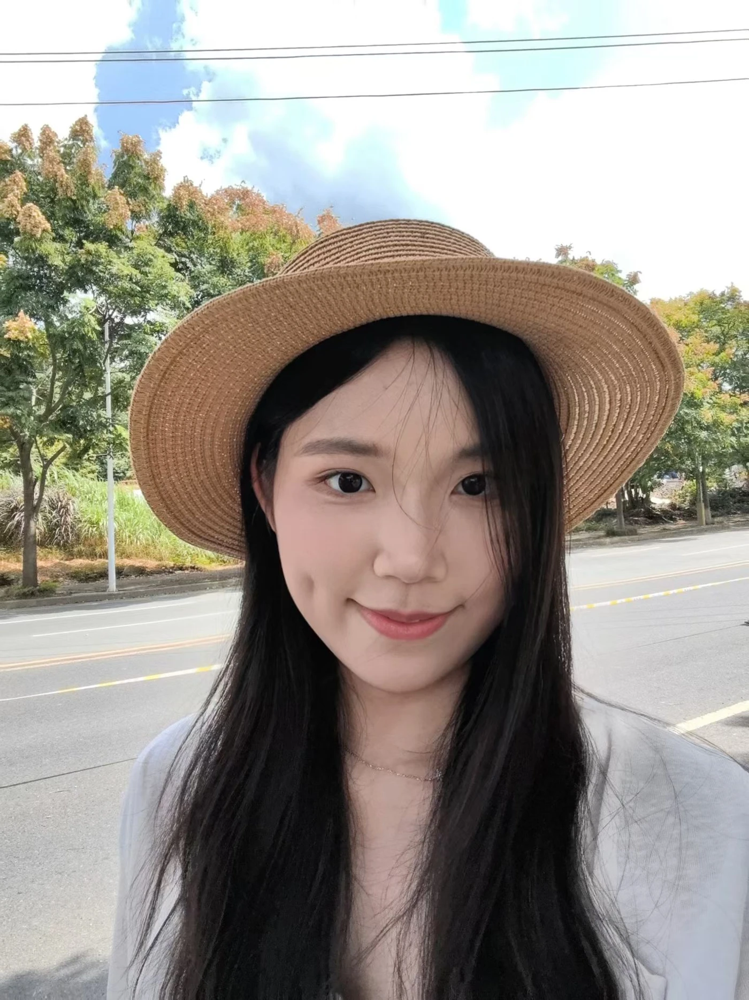
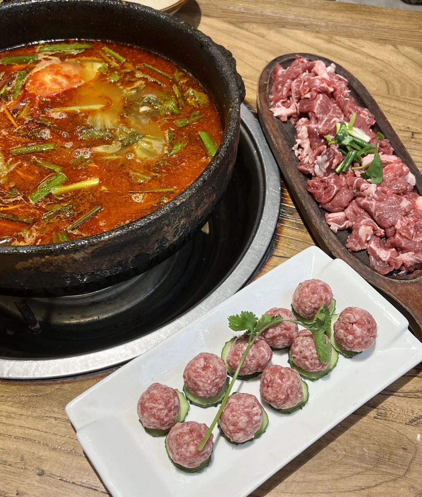
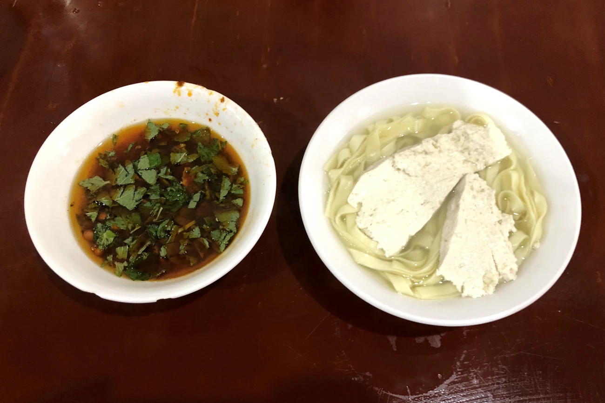

贵阳 · 小吃丝娃娃 薄饼里的清爽滋味
丝娃娃
01薄饼裹着缤纷蔬菜，蘸一口酸辣，把清爽和热闹一起收进嘴里。
摄影 Caitriana Nicholson · CC BY-SA 2.0 ↗
周杰的 Photo.读读我的故事 ↗A PERSONAL PHOTO DIARY / 周杰
Life, in a softer light.
你好，我是周杰。来自贵州的一名护士。
工作时认真，生活里喜欢拍照、寻味，也慢慢成长。

Hello, it’s me.FIG. 01 — ABOUT ME01 / THE PERSON BEHIND THE PHOTOS
你好，我是周杰，来自贵州，是一名护士。
工作时认真，生活里喜欢慢慢发现美好。
喜欢拍照，也喜欢美食；喜欢出发时的期待，也喜欢家乡熟悉的味道。希望用照片留住日常，用一点点努力，走向更好的自己。
温柔生活，也认真成长。Zhou Jie
还有一段，想慢慢讲给你听的故事 ↗02 / SELECTED MOMENTS
有些瞬间不必说话，
照片会替我记得。
把平凡的日子，拍成喜欢的回忆。
03 / A TASTE OF HOME
从一碗热汤到一口小吃，
用味道认识我的家乡。

贵阳 · 小吃薄饼裹着缤纷蔬菜，蘸一口酸辣，把清爽和热闹一起收进嘴里。
摄影 Caitriana Nicholson · CC BY-SA 2.0 ↗
贵州 · 酸汤酸香与热气在锅里相遇，一道带着贵州风味的暖心热汤。
摄影 Leeinm · CC BY-SA 4.0 ↗
遵义 · 面食细嫩豆花、面条与一碟蘸料，简单的一碗，也能盛下家乡的烟火气。
摄影 Augusthaiho · CC BY-SA 4.0 ↗美食区使用 Wikimedia Commons 摄影作品，非周杰本人拍摄。照片经格式转换、缩放，网页展示可能裁切，原图权利与相同方式共享许可保持不变：CC BY-SA 2.0 / CC BY-SA 4.0。各图下方可查看原始来源；后续会继续收藏更多家乡味道。
04 / MY LITTLE STORY
一些不那么顺利的日子，
和后来，重新认识自己的我。
01 / THE EARLY YEARS
小时候在老家读小学，我的成绩还不错。五年级那年转学，突然换了一个全新的环境，我很不适应，成绩也一点点落了下来。那时的我还不太会表达，只知道自己好像怎么做都不对。
在我的感受里，有些老师更偏爱成绩好的学生，而当成绩不够好时，连其他事情也容易被否定。我想被理解，却常常先被分数定义。后来小升初没考好，在亲戚的帮助下，我进了一个比较好的班，但并没有因此立刻找回信心。
初中那几年，成绩的压力和被否定的委屈叠在一起，很多情绪无处安放。我逐渐变得叛逆，尤其是初三。现在想起来，连我自己都会觉得：“那时候的我，也太叛逆了吧。”但我也知道，当时的自己确实过得不太开心。
02 / A GENTLER TURN
到了高中，我开始觉得，不能再一直这样下去了。我想把生活重新拉回自己手里，也想看看，认真努力的自己究竟能走多远。
幸运的是，高中遇到的老师大多很好。他们会鼓励我，不会因为一时的成绩就否定一个人。那些肯定让我慢慢愿意相信，自己也可以学好，也值得被认真对待。于是，我开始更努力地学习。
只是高考并没有像期待的那样顺利，发挥失常让我留下了遗憾。姐姐们读书一直很厉害，也都读到了研究生；每次被放在一起比较，我都会觉得不好意思，甚至有些尴尬。那时，我还很容易用成绩衡量自己的价值。
03 / TRYING AGAIN
上大学后，我有了考研的念头。平时上课、准备期末考试，我都尽量认真。有时也会听到室友在背后调侃：“卷王又去学习了。”当时真的会烦，也会因为这些话感到委屈。现在回头看，才觉得它们已经没有那么重要了。
后来，我一边实习，一边准备考研。忙的时候也会怀疑自己，甚至一度觉得，大概考不上了吧。但那个想继续读书的念头，还是让我坚持了下来。
结果，那年的题比较难，分数线也低一些，我竟然真的被录取了。里面有一点幸运，也有那些实习之余依然在学习的日子。回想起来，原来我也在自己没有那么确定的时候，一步一步走到了这里。
04 / LOOKING BACK, SOFTLY
以前，无论处在小学、初中、高中，还是大学，我好像总觉得当下不是很开心。那时遇到的事情很近，委屈很真，别人的评价也很容易在心里停留很久。
一路走到现在，再回头看，很多事已经没有当初那么沉重了。我依然记得那些不被理解的时刻，也记得后来愿意鼓励我的老师、遇见的好人，以及认真生活时发生的小事。它们都在这段路上。
现在的我，想慢慢学着不再拿别人的进度催促自己。认真工作，继续学习，拍喜欢的照片，吃想吃的美食。走得慢一点也没关系，我也在往前走。
如果能和以前的自己说句话，我想告诉她：那时候辛苦了。后来也有好的人和事，而你，已经比自己以为的走得更远。
写给来时的自己，也写给正在认真生活的你。♡
05 / LITTLE STEPS
把认真留给工作，
把热爱留给生活，
也给成长留一点时间。
认真对待每一次学习，让自己一点点更踏实。
留意光线、风景，还有那些容易被忽略的小瞬间。
用照片与文字，慢慢收集属于家乡的美食记忆。
THANK YOU FOR STOPPING BY
这里是周杰的 Photo。很高兴，你来过。
愿下一次相遇，又多一些喜欢的瞬间。